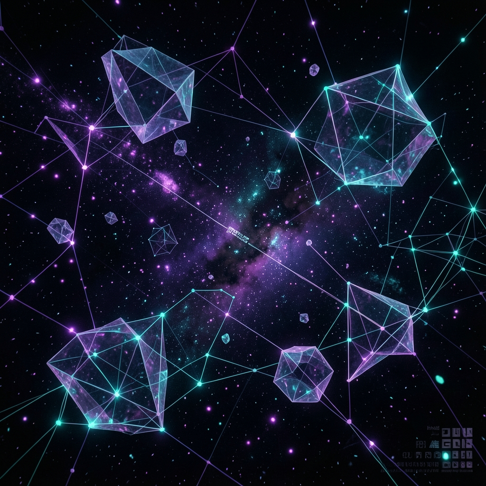

Внедряем AI-помощников на сайты, в Telegram и соцсети.
Прошли путь от IBM XT до нейросетей — и знаем, что работает на практике.
SavOS — это «Савченко Олег Сергеевич». Не агентство с безликими менеджерами, а основатель лично: вникает в ваш бизнес, проектирует решение и доводит его до запуска.
А две буквы OS — это ещё и Operating System. Потому что настоящий AI работает не как отдельный виджет, а как операционная система вашего бизнеса: всегда включена, всегда думает, никогда не болеет.
Превращаем сложные технологии в инструменты, которые зарабатывают деньги — а не просто выглядят красиво на презентации
Умный виджет, который знает ваш прайс, ваши услуги и ваши правила — и отвечает клиентам вместо вас круглосуточно. Принимает заявки, консультирует, записывает на приём. Больше не нужно дежурить у чата в два часа ночи.
Не просто бот с кнопками — настоящий диалоговый помощник. Понимает свободные вопросы, ведёт разговор в контексте, помнит историю переписки, может продать, записать и отчитаться. Интегрируется с вашим каналом или группой за несколько дней.
ВКонтакте, Instagram, Avito — все входящие в одной системе. Умный ответчик обрабатывает поток обращений, сортирует по срочности и передаёт живому менеджеру только то, что действительно требует человека. Скорость реакции — секунды, не часы.
Мы не вчера прочитали про ChatGPT — за нами 33 года реального IT-опыта
Первый звонок. Аудит бизнеса. Прототип. Внедрение. Сопровождение. Всё — мы. Вам не нужно нанимать программистов, разбираться в API или следить за дедлайнами. Просто скажите, что болит — и получите рабочее решение.
Нет сайта? Отлично — начнём с Telegram. Нет Telegram? Сделаем. Уже есть что-то работающее? Встроимся и усилим. Нам не нужна чистая площадка и нулевой бюджет на инфраструктуру — мы адаптируемся под реальность.
Наши боты не ищут совпадения по ключевым словам из справочника. Они понимают смысл вопроса — даже написанного с ошибками или в нестандартной форме. Помнят историю диалога. Обучаются на ваших данных. Принимают решения в контексте.
33 года в IT научили одному: сложное надо объяснять просто. Мы не произносим «промпт-инжиниринг» и «мультиагентная архитектура» без необходимости. Мы говорим: «через три дня у вас будет бот, который делает вот это» — и делаем.
Никакого тумана и «мы вам перезвоним» — только конкретные шаги с понятным результатом
Разговариваем с вами: какой бизнес, какие задачи, что раздражает каждый день. Ищем точки, где AI даст максимальный эффект именно у вас — не по шаблону «а у нас вот так делают», а конкретно под вашу ситуацию. Это бесплатно.
За 2–3 дня собираем рабочую демо-версию. Не макет в Figma и не обещание на словах — реальный бот или ассистент, с которым можно поговорить. Смотрите, трогайте, вносите правки до того, как мы ушли в полное внедрение.
Разворачиваем на вашем сайте, в вашем Telegram, в вашей CRM или мессенджере. Настраиваем, гоняем в боевых условиях, передаём с инструкцией и без паники. За 20 лет сисадминского опыта мы видели всякое — ваша инфраструктура нас не испугает.
Мы не исчезаем после запуска — и это не рекламная фраза. Мониторим работу, вносим правки, обучаем помощника на новых данных. Ваш бизнес растёт — AI растёт вместе с ним. Мы рядом на этом пути.
Мы с историей — не стартаперы, открывшие ChatGPT в прошлом году
Я начал работать с компьютерами в 1992 году — ещё с классических IBM PC XT, которые сейчас встречаются только в музеях. Прошёл всю линейку сам, своими руками: 286, 386, 486, первые Pentium'ы. То время, когда каждое новое поколение железа было маленькой революцией, а каждый новый мегагерц реально чего-то стоил.
С самого начала я совмещал три роли одновременно: программировал, администрировал сети и серверы, собирал компьютеры на продажу. Больше 20 лет сисадминства — сотни машин, тысячи пользователей, бесчисленные ночные дежурства. Параллельно я писал программы на заказ, делал сайты, создавал обучающие курсы, вёл YouTube-каналы по крипте, разрабатывал торговых ботов для crypto и forex.
«Мне уже за 55... Ведь я 1969 года рождения. Так что я не молодой стартапер, открывший ChatGPT в прошлом году. За плечами — больше полувека жизни и 33 года в технологиях. С таким багажом приходят к AI не с восторгом новичка, а с пониманием практика: что работает в реальном деле, а что — красиво звучит только на презентации. И главное — я хорошо понимаю тех, кто ищет своё место в этом новом мире.»
Патрик — мой технический партнёр, с которым мы вместе прошли немало сложных проектов и преодолели не один настоящий технический тупик. У нас разные подходы к задачам — и это плюс, а не минус. Там, где я вижу архитектуру и выстраиваю мост между клиентом и технологиями, Патрик воплощает это в реальный код и работающую инфраструктуру.
Мы работаем в тандеме — и за счёт синергии вместе решаем задачи, с которыми каждый из нас в одиночку справлялся бы значительно дольше и с гораздо более серьёзными трудностями. Результат всегда больше суммы частей.
Расскажите о задаче — разберём, что именно AI может решить в вашем конкретном случае, и сколько это стоит. Без давления и лишних слов.
Написать в Telegram